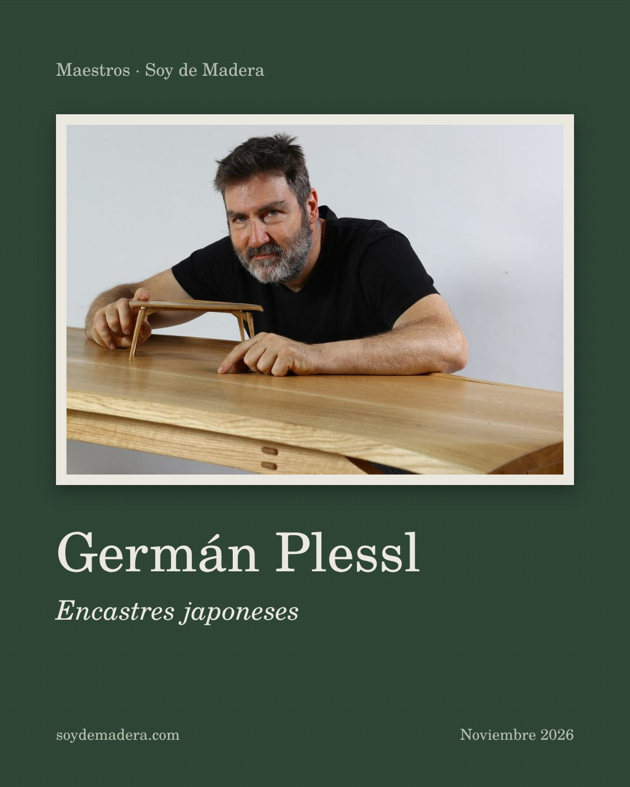
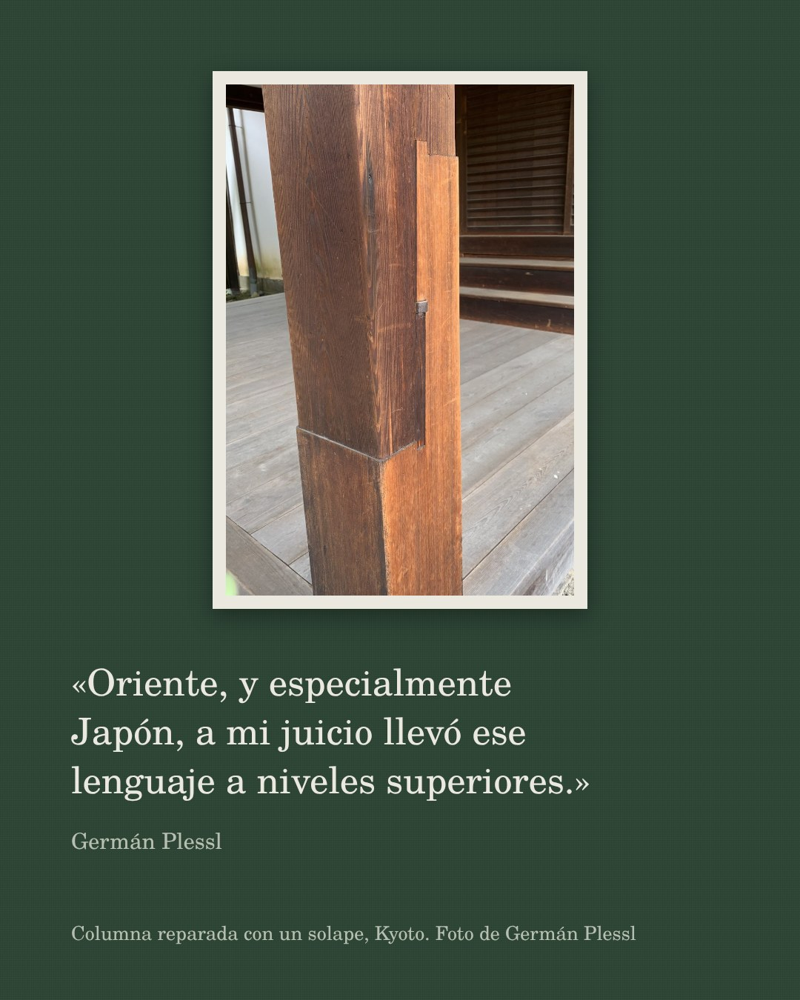
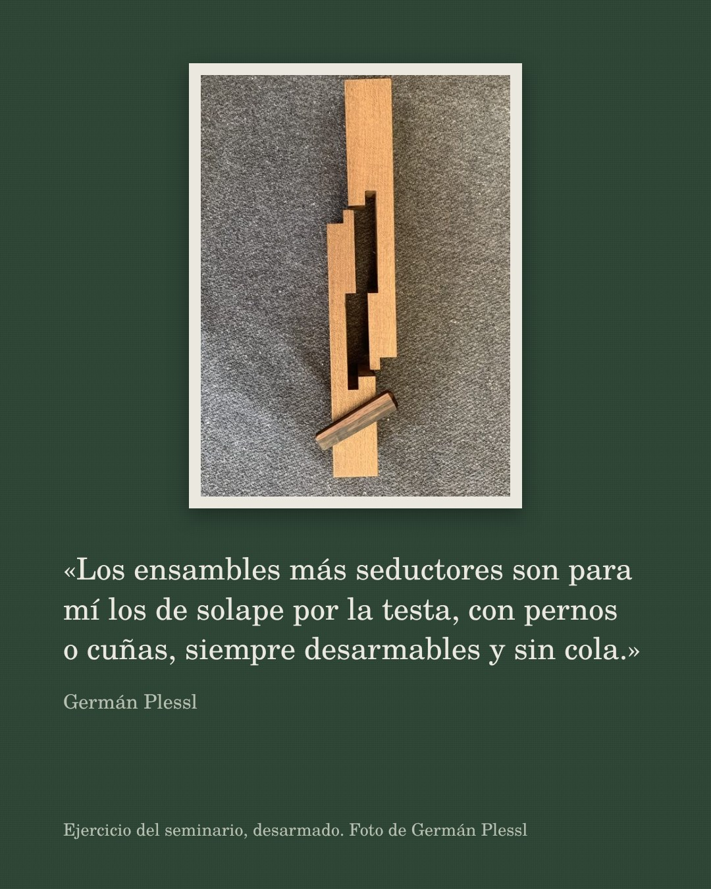
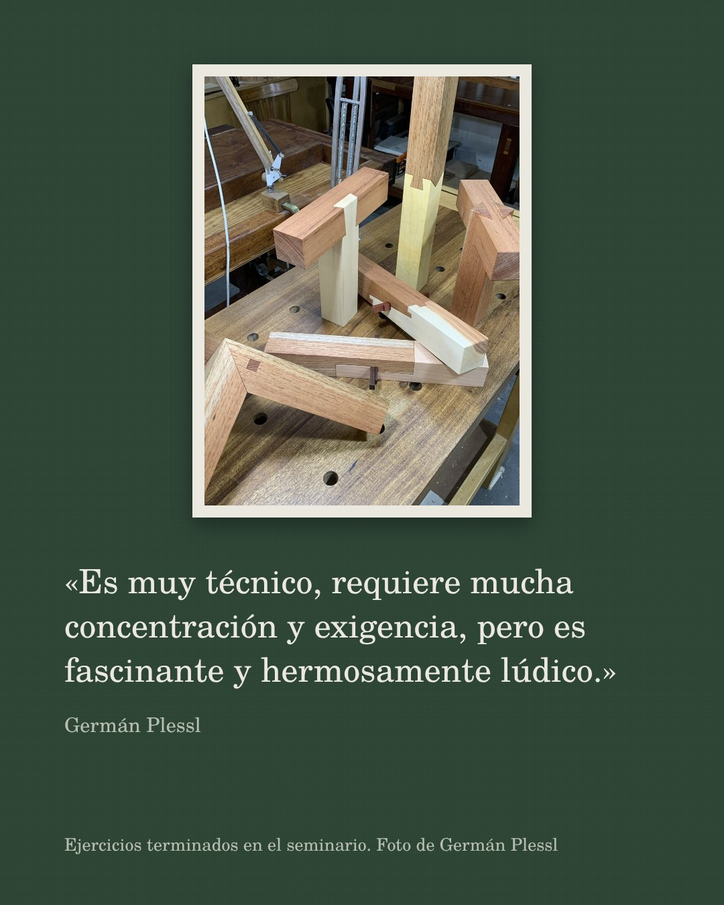
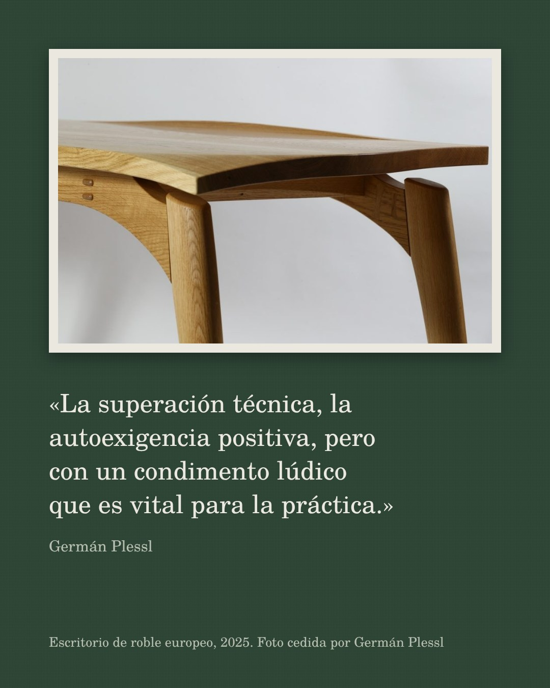
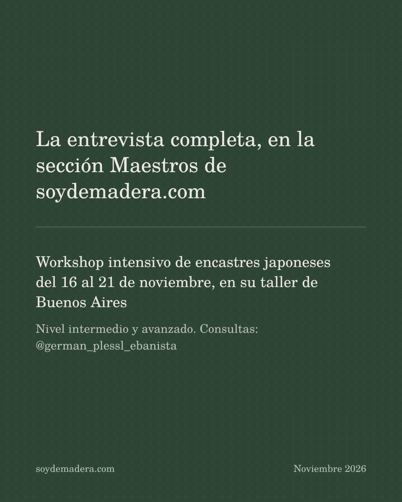

Carrusel de Instagram: Germán Plessl
Página de revisión, no forma parte del sitio. Seis láminas de 1080 × 1350 para publicar en colaboración con @german_plessl_ebanista el día que sale la entrada.






Texto de la publicación
Germán Plessl, ebanista, diseñador artesano e instructor, cuenta de dónde vienen los encastres japoneses y cómo los lleva de la viga de un templo a un ejercicio de banco.
La entrevista completa, en la sección Maestros de soydemadera.com (enlace en la bio).
Del 16 al 21 de noviembre da su workshop intensivo de encastres japoneses en Buenos Aires.
#carpintería #ebanistería #madera #encastresjaponeses